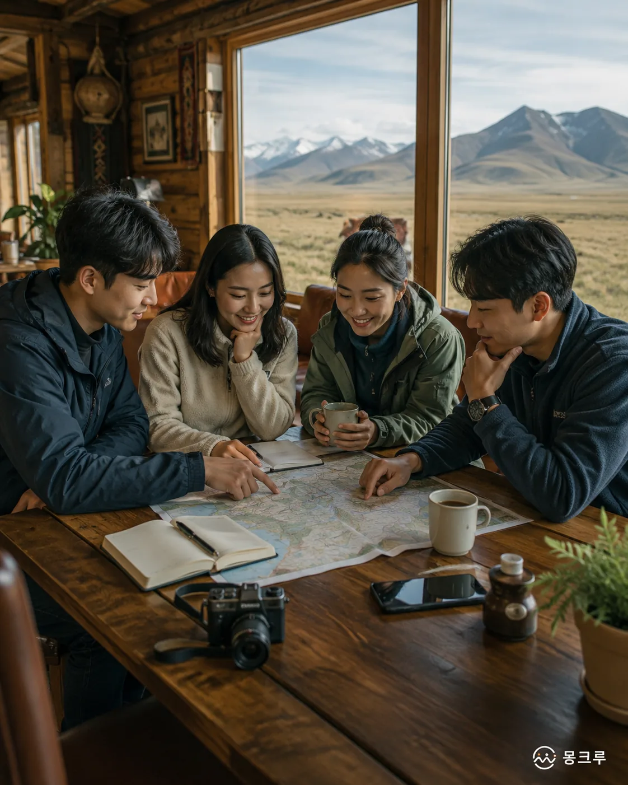

출발 전, 크루와 함께 그리는 동선
BEFORE DEPARTURE
준비의 절반은
준비의 절반은
출발 전에 끝납니다
몽골은 현지에서 살 수 있는 것과 없는 것이 명확한 여행지예요. 항공권과 여행자보험, 침낭 온도, 현금 환전까지 — 아래 체크리스트를 크루와 함께 하나씩 지워 나가면, 공항에서 당황할 일이 없습니다.
01입국 · 비자 최종 확인 2026.07
대한민국 일반여권 소지자는 관광 목적에 한해 최대 90일 무비자로 몽골에 입국할 수 있습니다. 몽골 정부는 이 제도를 2026년 12월 31일까지 연장했습니다. 취업·유학·장기체류 등 관광 외 목적은 사전 비자가 필요합니다.
여권
잔여 유효기간 6개월 이상 권장
왕복 항공권
출국 항공권 확인 요청 가능
숙소 증빙
예약 확인서 또는 투어 여정확정서
현지 경찰의 신분 확인 시 여권 사본은 인정되지 않습니다. 원본을 소지하되, 분실 대비 사본·사진은 따로 보관하세요. 출입국 정책은 바뀔 수 있으니 출발 전 주몽골 대한민국대사관·몽골 이민청 공지를 다시 확인해 주세요.
02항공 · 공항
인천–울란바토르(칭기즈칸 국제공항) 직항은 약 3시간 30분–4시간. 성수기에는 국적사·LCC·MIAT 몽골항공 등이 운항하며, 심야 출발·새벽 도착 편이 많아 도착 첫날은 일정에 여유를 두는 게 좋습니다. 신공항에서 시내까지는 차로 약 1시간–1시간 30분 걸립니다.
동행 팀은 보통 ‘같은 날 도착’ 기준으로 모집합니다. 모집글의 집결 시간과 내 항공편 도착 시간을 꼭 비교하세요.
03계절 · 날씨
| 시기 | 특징 | 여행 포인트 |
|---|---|---|
| 6–8월 | 낮 20–30℃ 성수기. 초원이 가장 푸르고 밤은 한 자릿수까지 떨어지는 큰 일교차. | 동행·게르 예약 경쟁 최고조 |
| 7월 중순 | 나담 축제(7.11–13 전후) — 씨름·활쏘기·경마. 숙소·항공 조기 마감. | 최소 2–3개월 전 예약 |
| 9월 | 선선하고 건조. 달 없는 주간엔 별 관측 최적. | 사진·별 테마 동행 추천 |
| 10–11월 | 쌀쌀한 비수기. 일부 게르캠프 휴장. | 방한 준비 필수 |
| 12–2월 | 영하 20℃ 안팎의 혹한. 설원과 얼음축제의 계절. | 전문 방한장비 · 여유 일정 |
| 3–5월 | 황사와 강풍. 건조한 갈색 초원. | 마스크·고글 도움 |
여름에도 밤 게르는 춥습니다. 침낭과 얇은 패딩은 계절과 무관한 준비물이에요.
04돈 · 환전
- 통화는 투그릭(₮, MNT). 한국에서 투그릭 환전은 사실상 어려워 미국 달러를 준비해 울란바토르 시내에서 환전하는 것이 일반적입니다.
- 울란바토르 시내는 카드 사용이 잘 되지만, 투어 중 지방·게르캠프·유목민 상점은 현금만 가능한 곳이 많습니다.
- 기사·가이드 팁은 관례입니다. 팀에서 미리 기준을 합의하고 공동경비 장부에 기록하면 마지막 날 얼굴 붉힐 일이 없어요.
- 공동경비는 한 명이 몰아 걷기보다, 지출 때마다 기록하고 마지막에 정산하는 방식을 권장합니다. 몽크루 크루룸의 비용장부 기능이 이 과정을 도와드립니다.
05통신 · 데이터
- 현지 유심은 Unitel·Mobicom 등 공항·시내에서 구매할 수 있고, 출국 전 eSIM을 미리 사 두는 방법도 있습니다.
- 도시를 벗어나면 통신이 끊기는 구간이 깁니다. 오프라인 지도 앱(구글 지도 오프라인 저장 등)과 번역 파일을 미리 내려받으세요.
- 게르캠프의 전기는 시간제인 곳이 많습니다. 대용량 보조배터리와 팀 공용 멀티탭이 사실상 필수입니다.
- 출발 전 가족·지인에게 일정을 공유하세요. 외교부 ‘해외안전여행’ 동행 서비스로 일정·위치를 등록해 두면 비상시 도움이 됩니다.
06숙박 · 게르의 현실
투어 숙박은 대부분 게르캠프입니다. 캠프마다 샤워·수세식 화장실 유무, 침구 상태, 전기 시간이 크게 다릅니다. 몽크루 모집글과 파트너 정보에는 이 조건이 표준 항목으로 표시됩니다.
- 고비 코스는 이동 중 ‘초원 화장실’(자연) 구간이 있습니다. 물티슈·휴지는 넉넉하게.
- 샤워는 코스에 따라 2–3일에 한 번 가능한 수준으로 계획하는 것이 현실적입니다.
- 게르 배정은 보통 2–4인실. 커플·동성 배정 희망은 예약 시 미리 요청해야 합니다.
07짐싸기 체크리스트 0 / 0 완료
필수 서류
의류
생활 · 위생
전자 · 장비
팀 공동 준비물 — 크루룸에서 담당자를 정해 중복을 줄이세요
08안전 · 건강
- 여행자보험은 선택이 아니라 기본. 낙마·오프로드 이동·의료 후송까지 보장 범위를 확인하세요. 승마 시 헬멧 착용을 요청하세요.
- 울란바토르 시내에서는 소매치기를 조심하세요. 나담 축제와 차강사르(설) 기간에 특히 늘어납니다. 야간 단독 이동과 비공식 택시는 피하는 것이 좋습니다.
- 국제 열차 이용 시 침대칸 절도 사례가 보고됩니다. 취침 시 귀중품은 몸에 지니세요.
- 오지 구간의 통신 두절에 대비해 팀 비상연락망·일정표를 종이/오프라인으로 한 부 지참하세요. 몽크루 팀은 출발 전 ‘오프라인 비상카드’를 함께 만듭니다.
- 몽골 현지 긴급번호: 경찰 102 · 구급 103 / 대한민국 영사콜센터(24시간) +82-2-3210-0404. 주몽골 대한민국대사관 연락처는 출발 전 공식 홈페이지에서 확인해 저장해 두세요.
09문화 · 매너 · 기본 몽골어
- 게르 방문 시 문지방을 밟지 않고, 내부에서는 시계 방향으로 움직이는 것이 예의입니다.
- 유목민 가정과 사람을 촬영할 땐 먼저 동의를 구하세요. 대접받은 음식은 조금이라도 맛보는 것이 예의입니다.
- 사원에서는 모자를 벗고 조용히. 종교 의식 중 촬영은 삼가세요.
| 몽골어 | 뜻 |
|---|---|
| 샘베노 (Сайн байна уу) | 안녕하세요 |
| 바야를라 (Баярлалаа) | 감사합니다 |
| 오칠라래 (Уучлаарай) | 실례합니다 · 죄송합니다 |
| 자 (За) | 네 · 좋아요 |
| 바야르태 (Баяртай) | 안녕히 계세요 |